Intrinsic Brain Networks are Organized by Frequency Relationships
- Shahir Mowlaei pitt
- Aarti Singh cmu
- Avniel Ghuman pitt
VAMP Meeting
University of Pittsburgh
Department of Neurological Surgery
March 21, 2017
Intro
- Oscillatory synchrony is thought to reflect the integration of activity across large and small scale brain networks.
- Aberrant synchrony has been observed in a number of neuropsychiatric disorders.
- The frequency spectrum has been divided into broad frequency bands based on ad hoc observation in particular regions and networks and cognitive tasks.
- It remains unknown whether these bands represent an intrinsic organizational property of the human connectome.
Questions
- Are there robust frequency bands/clusters in the intrinsic/resting-state connectome?
- How do these bands compare to the ad hoc canonical frequency bands?
- Are frequency bands associated with consistent connectivity profiles across individuals?
- What are the band-specific networks?
Are there robust frequency bands/clusters in the intrinsic/resting-state connectome?
- It is unknown if frequency bands emerge from brain data, particularly at the network level.
- We answer this question by examining all-to-all resting-state connectivity patterns (intrinsic connectome) at each frequency from 1 to 50 Hz.
- Unsupervised learning at the group level is then used to determine if there are consistent frequency clusters across subjects.
Connectome Methods
- 35 healthy subjects
- 10 minutes of visually-fixated resting-state MEG
- Source localize the resting-state signal
- Calculate PLV for each frequency from 1-50 Hz between each pair source points ( $50\times 5124\times 5124$ )
- Compare to PLV calculated from empty room data to remove cross-talk artifact
Unsupervised learning methods (normalization and graph similarity)
First normalize the graphs remove global frequency effects (e.g. $1/f$) by equating the CDFs at each frequency.
This removes any density bias and leaves only network structure for calculating similarity.
We employ three graph similarity measures:
- $\mathbf{L}_1$ distance Average absolute edgewise difference
- Degree distance One minus the weighted degree correlation
- Local clustering coefficient (LCC) $\cdots$ distance One minus the LCC correlation between binarized graphs
ben guo
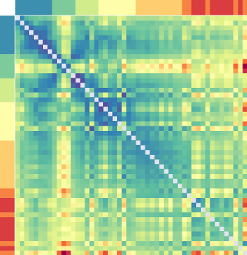
$\mathbf{L}_\mathbf{1}$
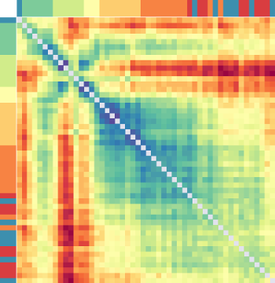
Degree
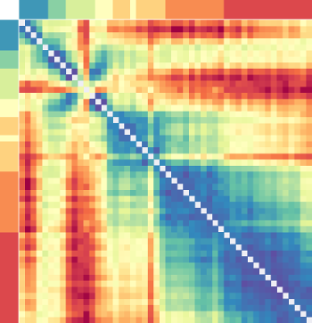
$\mathbf{LCC}_{\mathbf{75}}$
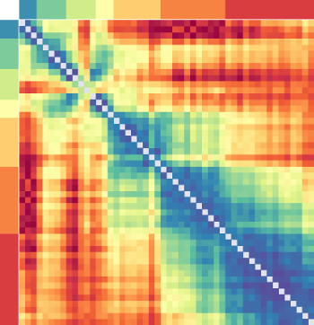
$\mathbf{LCC}_{\mathbf{85}}$
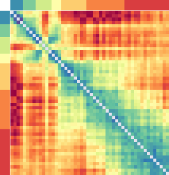
$\textbf{LCC}_{\mathbf{95}}$
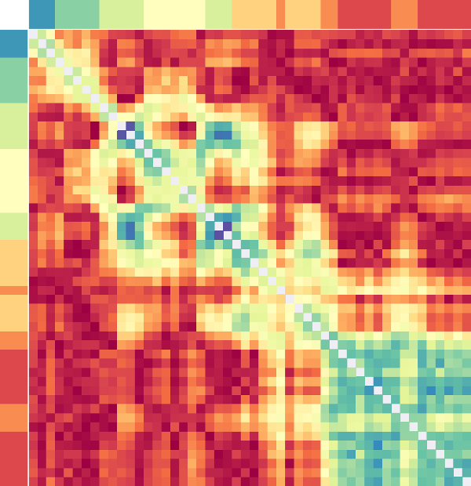
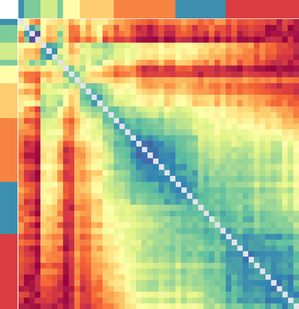
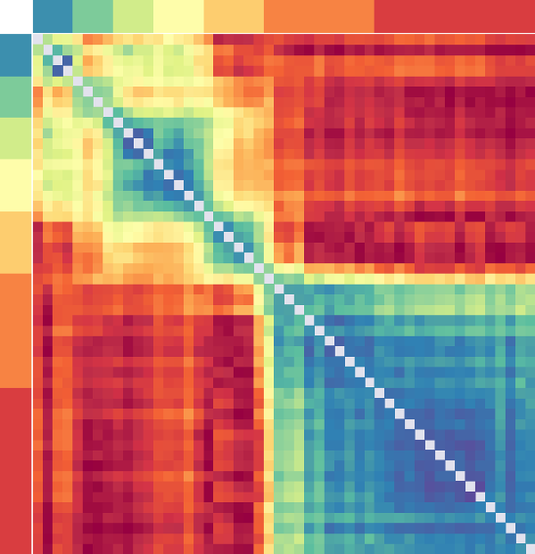
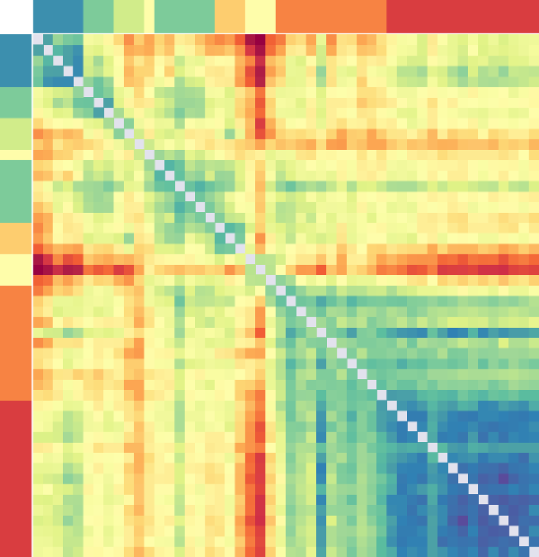
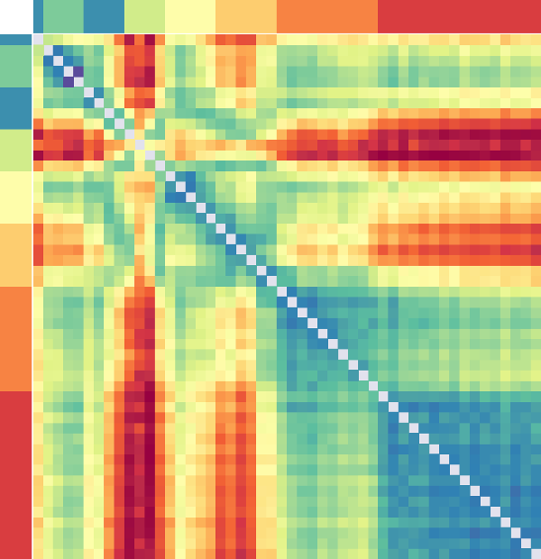
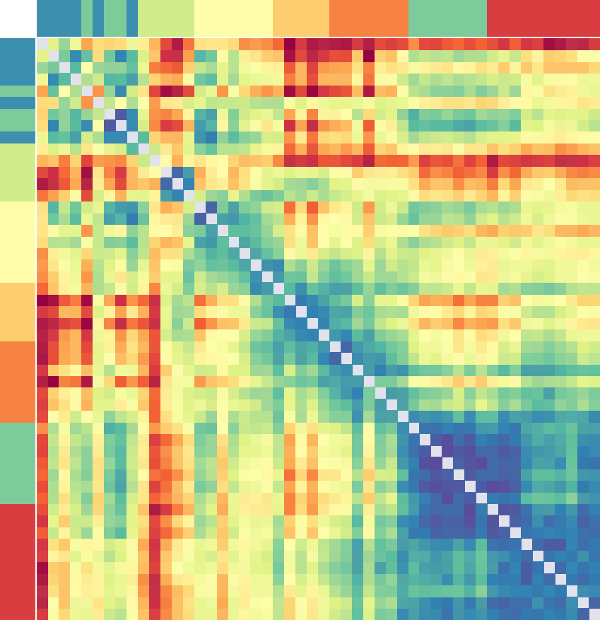
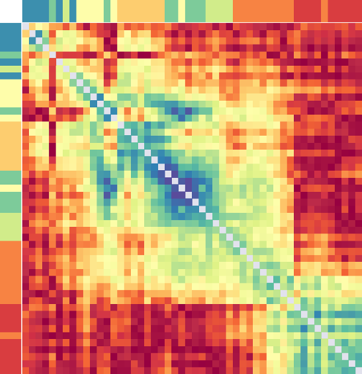
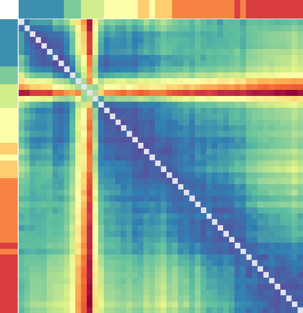
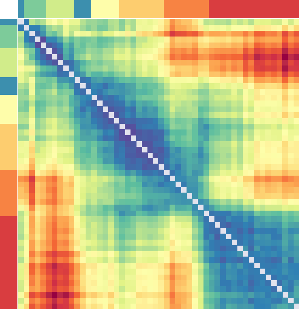
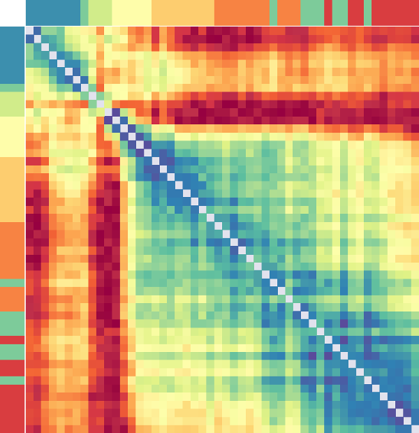
Unsupervised learning methods (clustering)
Clusters correspond to frequency bands.
Spectral clustering is our method of choice.
- The Ng-Jordan-Weiss interpretation of spectral clustering is adopted.
- Spectral clustering works with the notion of similarities. We normalize the distance matrices to the $\mathbf{[0,1]}$ interval and subtract their off-diagonal entries from unity to arrive at a similarity matrix.
- Instabilities We repeat the clustering process a number of times and assign the cluster (band) labels by majority vote.
$V(X;Y) =\; -\,\sum_{i,j}\, \frac{\left|X_i\cap Y_j\right|}{|X|\equiv |Y|}\cdot\left\{\log\left(\frac{\left|X_i\cap Y_j\right|}{\left|X_i\right|}\right)+\log\left(\frac{\left|X_i\cap Y_j\right|}{\left|Y_j\right|}\right)\right\}$
Variation of Information (VI) is used to quantify the inter-subject agreement. For a given ‘number of clusters’:
Clustering: how many bands? I
Exploiting the ‘subject’ degree of freedom
to fix the number of clusters.
to fix the number of clusters.
Variation of Information (VI) is used to quantify the inter-subject agreement. For a given ‘number of clusters’:
- compute the average VI between all pairs of subjects;
- (symmetrically) permute the distance matrices and recompute the first step a given number of times;
- subtract the average of the second step from the first.
VI is computed over a pair of clustering outputs: partitions.
Clustering: how many bands? II
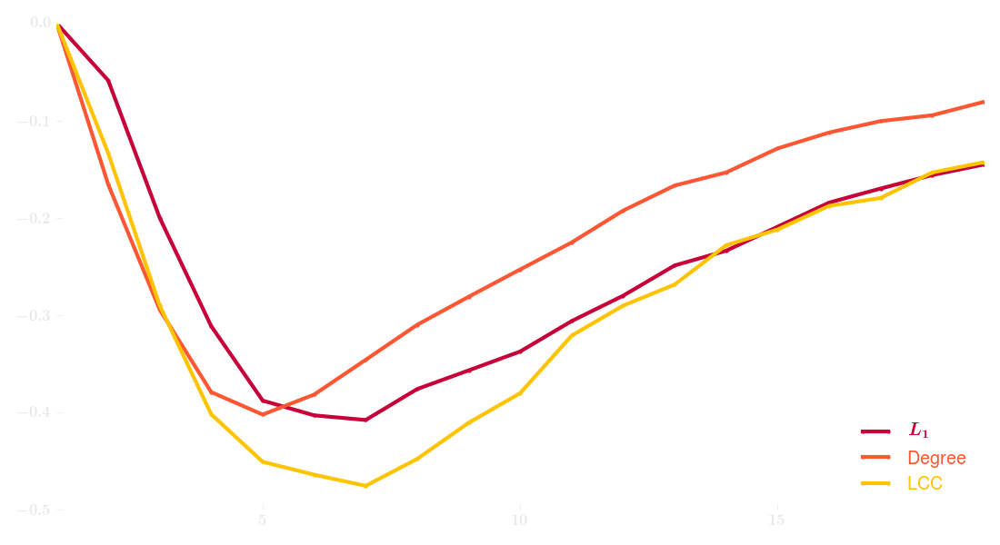 Mean of permutation-shifted variation of information between all subject pairsClustering: integration I

Clustering: integration II
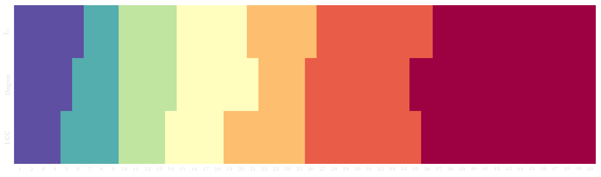
Questions
- Are there robust frequency bands/clusters in the intrinsic/resting-state connectome? Yes, 5-7 bands emerge from the connectome.
- How do these bands compare to the ad hoc canonical frequency bands? Reasonably well, with clear beta split.
- Are frequency bands associated with consistent connectivity profiles across individuals?
- What are the band-specific networks?
Prediction: feature extraction
We reduce the dimensionality of feature space from 13125126 to 50 Principal Pomponents (PC); the components derived from different subjects are combined:
- collect the first PC from all subjects;
- without centering the data, compute the first PC (moment) of the above; This is our first representative PC for all subjects: we keep it.
- subtract the above vector from the remaining PCs of all subjects and subsequently renormalize them;
- repteat the above with the remaining (transformed) PCs.
Prediction: classification I
w/ SVMRBF
Prediction: classification II
w/ SVMLin
Prediction: confusion matrices
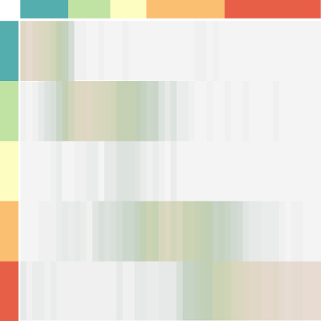
$\hspace{.25em}\mathbf{LCC}_\mathbf{95}$
Questions
- Are there robust frequency bands/clusters in the intrinsic/resting-state connectome? Yes, 5-7 bands emerge from the connectome.
- How do these bands compare to the ad hoc canonical frequency bands? Reasonably well, with clear beta split.
- Are frequency bands associated with consistent connectivity profiles across individuals? Very consistent. Given an all-to-all connectivity matrix, can classify
- What are the band-specific networks?
with > 75% accuracy what band it is associated with.
What are the band-specific networks?
What network structure separates frequency band networks from one another?
Our current method is univariate.
Room for improvement ↵
- For each edge,
- and for each class/band,
- we perform a $t$-test with a one-vs-rest decision function;
- the resluting $p$-value is thresholded at a signifcance level, normalized and assigned to that edge, in that band, as its weight.
Outcome
Discussion
To identify the network structure that separates a frequency band from others.
- Frequency bands are associated with distinct network structure, with similar structure within bands and distinctions between bands.
- Bands are similar to the canonical frequency bands from the literature.
- Network structure in each band is highly consistent across individuals.
- Hubs for each frequency are reasonable given what is believed to be the generators/critical nodes for frequency-specific oscillations.
Future directions
- May be able to define subject-specific bands using classification approach.
- Graph comparison and network templates allow for multimodal comparisons and fusion.
- High classification accuracy and robust pipeline make applying these methods to clinical populations (schizophrenia) for identifying pathology a natural next step.